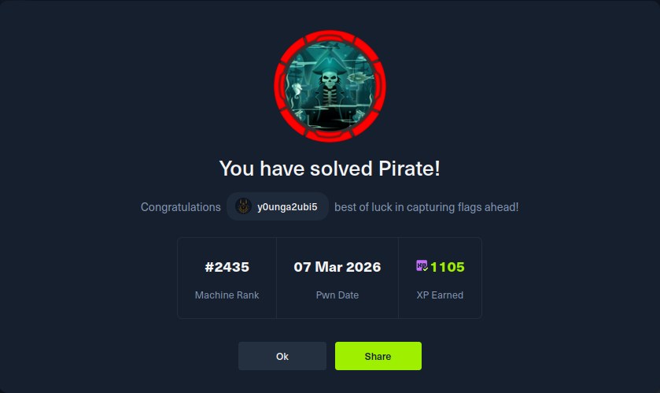

{% raw %}
<div class="wrapper">

  <div class="back-row">
    <a class="back-link" href="../writeups.html">← Retour aux analyses</a>
  </div>
  <div class="hero">
    <span class="hero-category">HackTheBox - Active Directory</span>
    <h1>Pirate</h1>
    <p class="hero-sub">
      Six Active Directory primitives chained from anonymous LDAP to Domain Admin:
      Pre-Win2000 auth, gMSA extraction, NTLM relay RBCD, SPN injection, and
      constrained delegation with Protocol Transition.
    </p>
    <div class="hero-meta">
      <span class="tag tag-date">2026-03-08</span>
      <span class="tag tag-cat">Active Directory</span>
      <span class="tag tag-cat">Windows</span>
      <span class="tag tag-cat">Kerberos</span>
      <span class="tag tag-hard">Hard</span>
      <span class="tag tag-win">Windows Server 2019</span>
    </div>
    <div class="stats-row">
      <div class="stat"><span class="stat-val">6</span><span class="stat-label">Primitives</span></div>
      <div class="stat"><span class="stat-val">3</span><span class="stat-label">Machines</span></div>
      <div class="stat"><span class="stat-val">DA</span><span class="stat-label">Impact</span></div>
      <div class="stat"><span class="stat-val">0</span><span class="stat-label">CVEs Used</span></div>
    </div>
  </div>
    <!-- TODO when publishing: remove noindex, add this page to sitemap.xml, replace À venir status badges, and restore normal listing link text. -->
    <div class="pending-section">
      <div class="pending-lock">&#128274;</div>
      <h2 class="pending-title">Writeup à venir</h2>
      <p class="pending-msg">Cette machine est encore active sur HackTheBox. Le writeup sera publié dès son retrait de la plateforme.</p>
      <div class="pending-proof">
        <p class="proof-label">Preuve de résolution</p>
        
      </div>
    </div>

</div>
{% endraw %}
